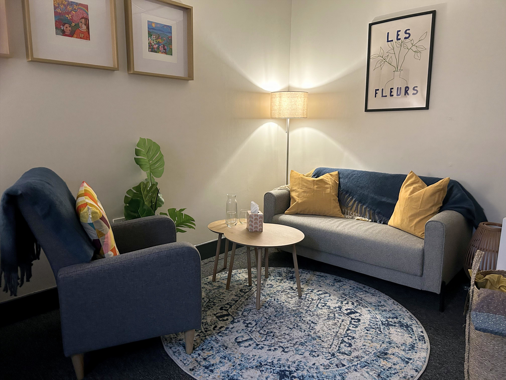
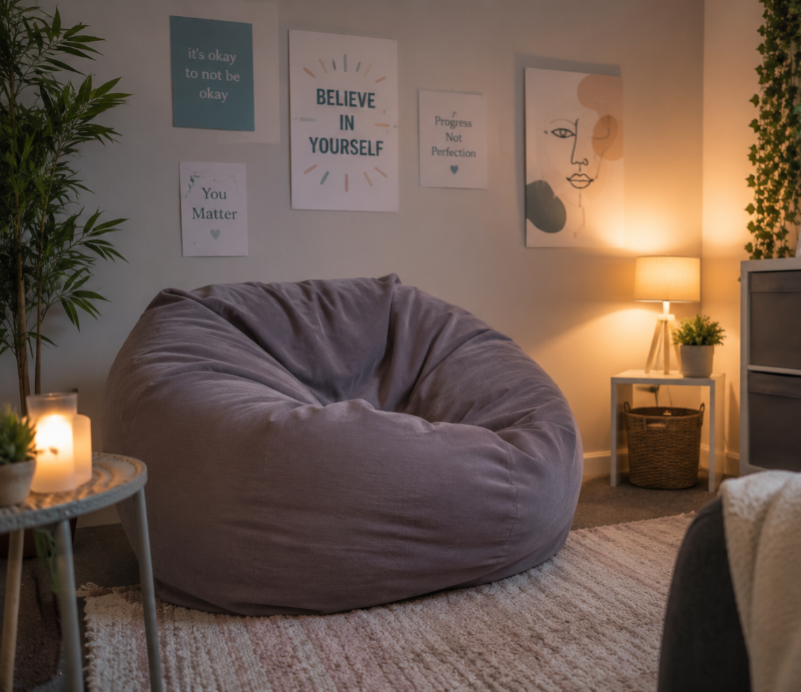
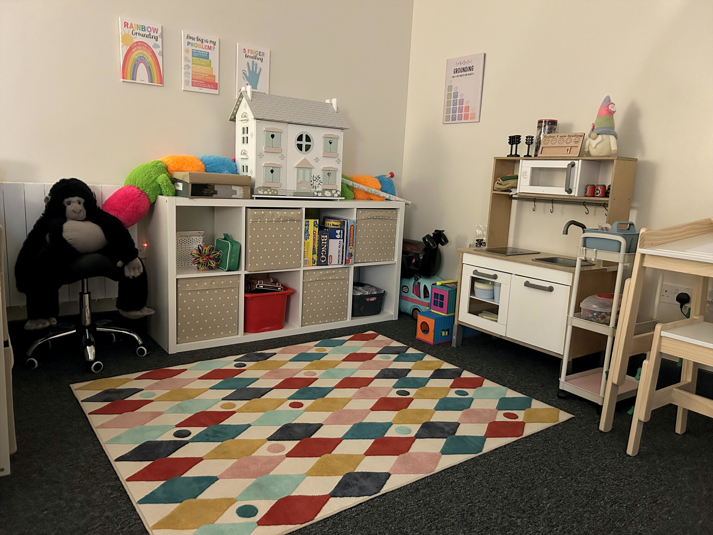

Séimh Counselling and Psychotherapy
Spás sábháilte, séimh, suaimhneach.
A gentle, caring, safe space.
Spás sábháilte, séimh, suaimhneach.
A gentle, caring, safe space.
Hi, I'm Áine.
I believe there is no "one-size-fits-all" approach to therapy. Every individual - child, adolescent, or adult - is unique and brings their own lived experience, strengths, and challenges. I will work together with you to explore a therapeutic way forward that is flexible, tailored to your needs, working towards your goals, while regularly checking with you that this feels right and is supporting you.
I work integratively, which means I draw from a range of evidence-based therapeutic approaches to provide personalised support. These approaches may include:
By adapting therapy to each individual adult, adolescent or child, my goal is to create a supportive and meaningful therapeutic experience that respects your emotional, developmental, and psychological needs.
At the heart of my work is the evidence-based belief that the therapeutic relationship itself is central to creating lasting and meaningful change. I work collaboratively with adults, adolescents, children, and families to ensure therapy feels safe, empowering, and supportive. As a client you are encouraged to have an active voice in your therapeutic journey, helping shape sessions in ways that feel comfortable, engaging, and beneficial for you. My approach is neurodiverse positive, LGBTQIA+ affirming, and trauma informed. As a pre-accredited member of IACP I adhere to professional guidelines and codes of ethics.
Whether you are seeking support for yourself, your teenager, or your child, Séimh Counselling & Psychotherapy can offer a space to feel understood, develop healthier coping strategies, and build emotional resilience.
If you would like to know more about the way I work, please get in touch to arrange a free 20-minute consultation.
My work with adults focuses on both present-day challenges and the ways earlier life experiences can continue to shape thoughts, emotions, relationships, and behaviours. Therapy offers a confidential space to explore experiences, gain insight, and develop healthier ways of coping and relating.

I work with adults experiencing:
Adolescence can be an emotionally intense and challenging stage of life. Therapy provides a supportive space where teens can speak openly without fear of judgement, building resilience, emotional awareness, communication skills, confidence, and healthier coping strategies.

My approach to adolescent psychotherapy supports young people through talk therapy, creative expression, art, storytelling, sensory-informed interventions, and reflective exploration.
Adolescent therapy can support young people experiencing:
Children often communicate emotions through behaviour, play, creativity, and relationships rather than words alone. Child-centred counselling offers a safe and supportive space where children can explore difficult feelings, process big emotions, and make sense of overwhelming experiences.

In association with D3 Counselling & Psychotherapy, our Kilbarrack therapy room includes a dedicated therapeutic space for children, supporting creative approaches such as integrative play therapy, CBT-informed interventions, art, storytelling, and sensory-informed work helping children develop emotional understanding, coping skills, confidence, resilience, and a stronger sense of self.
Therapy can help children with:
If you are here, you are already considering taking the first important step. Reach out for a free 20 minute consultation, in person or over the phone, to discuss what you, your teen, or your child would like from therapy.
Arrange a ConsultationThe standard fee for an individual 50-minute session is €70.
Assessment and review sessions with parents and carers of under 18s attending therapy are 60-minute sessions and incur a fee of €80.
Typically therapy sessions take place once a week. Research shows that the frequency of sessions impacts the effectiveness of therapy. Weekly sessions are particularly important when beginning therapy, for more acute symptoms and for intensive work.
However, as every person's journey is unique to them, we can modify the plan to meet your needs. As you start to feel more confident in your progress, you may be comfortable meeting every two weeks. To make sure you're making the most of our time together, we'll talk about what works best for you and adjust the plan accordingly.
I strongly believe that therapy should be accessible to all. Low cost therapy options are available for individuals experiencing financial difficulty. If cost feels like a barrier, please don't hesitate to get in touch — we can discuss a fee arrangement that works for your circumstances. The goal at Séimh Psychotherapy is to provide compassionate, accessible support regardless of financial situation.
Email:
aine@seimhpsychotherapy.ie
Telephone:
087 036 6021
Kilbarrack Location:
Nesta Business Centre
Howth Junction, Kilbarrack
Dublin 5, D05 DC60
Clontarf Location:
D3 Counselling & Psychotherapy
The Merchamp Centre, Clontarf
Dublin 3, D03 E0X3